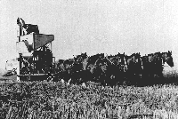

Traditional tillage
This type of tillage system uses cultivation to destroy weeds and to prepare dark-coloured, plant-free summerfallow. It can utilize both
high and low disturbance implements. Machine design and
the manner in which machines are handled result in these two types of
tillage actions; high-disturbance action disturbs almost all of the soil surface. The use of plow or
disc-like implements, combined with high speeds, results in the disappearance of the majority surface residue after just one operation.
Low-disturbance implements, including cultivators and rodweeders, are pulled at slower speeds. The entire surface may not be worked leaving some of the surface undisturbed. This allows surface residues to remain anchored upright in the soil or at least remain on the surface.
Traditional tillage uses
summerfallowing as part of the cropping system. Fields are tilled and left to lay idle or "fallow" for a season or more. While this allows moisture reserves to build, any tillage loosens the soil making it prone to erosion. The 50-50 practice that has been used in southwest Saskatchewan (where moisture levels are low), involves conventionally worked summerfallow alternating with
a cereal crop. During the fallow year, tillage operations
keep weed and volunteer growths to a minimum and allow the soil
to build moisture reserves. The use of summerfallow may also interrupt disease cycles as well as contributing to a build-up of nutrients. Nutrient rich soil, free of disease helps to ensure the production of a higher yielding, better quality crop.
In addition to tillage operations, traditional methods involve the application of herbicides and other chemicals to control pests and the application of fertilizers to increase the nutritive content of the soil. The use of chemicals is not exclusive to traditional farming. Many conservative tillage programs require the application of the same chemicals for the same reasons.
Intensive cultivation and summerfallowing are still common in Saskatchewan. But, problems with soil erosion, increasing salinity and loss of organic matter are caused by this type of practice, so sustainable methods are necessary.
|